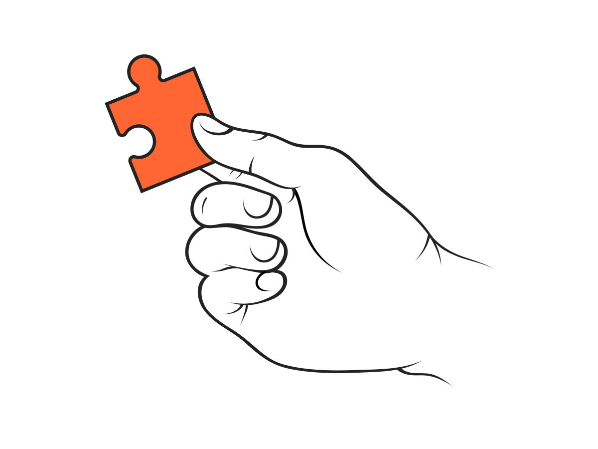

Today was a day for reconnection. Relationship rebuilding and reaching out.
I feel like I gauge my day on how well my run in the morning went. And I gauge how I think my run will be by the first mile of my run, and normally it's about 50% correct. By the time I'm in my first mile I either feel really good or I start to feel tired and I know that it's gonna be a long run. Today was one of those days where I felt real tired only in the first mile. I've been going pretty fast these past few days and I felt fast going at my 7:40 pace which I've been able to do pretty easily recently, so that wasn't a good sign. But as I eased into my pace, I started to pick things up naturally and was soon pumping out 7:15 pace pretty easily. Needless to say this was a really good run and I finally feel like I'm back in good running shape after being out so long from quarantine. It took two weeks but I finally feel like I'm really back in it.
Because I had such a great run I knew I wanted to keep the momentum going. Even during my run I was thinking to myself, "Be intentional today, keep listening and keep doing throughout the whole day." Today I was just with some of my teammates and I know that I've been holding practices and meeting with my team for the past two weeks but now I really feel like I'm connecting with these kids. They're only a year or two younger than I am and I'm so glad I'm starting to get to know them. As I'm waiting for their parents to come pick them up or talking to them right after their run when they're sweating and gasping for air, I realize how grateful I am to grow in relationship with these kids. These are some genuine, hard-working kids and now that I've become an "older" kid I want to do everything I can to help them. Help them develop themselves not just as good runners, but even better people as well. Today was just a real eye-opener for me in terms of that.
After practice I went to mow this older couple's lawn that lives in my town. I've been doing it for a little extra money as I'm waiting for a job. As I was talking to the wife I kinda realized what I should do today. I wanted to talk to people. I knew I wanted to reach out to a bunch of people I haven't talked to in a while. I do this every few weeks or so where I reach out to a bunch of my friends that I haven't really talked to because I really don't talk with many people consistently these days. So I spent today texting and reconnecting.
I think it's so funny, at least some of the people that I've talked to are very bored and want people to talk to just as badly as I do but still no one has been talking to anyone either. It's definitely weird to text people that you only see in person, like in school, and text them just for the purpose of relationship and wanting to talk. Regardless, I realized my pride isn't worth losing connection so I texted them. A lot of people have been having trouble, especially in their relationship with God. Because church has become so different from what it was, many churches don't have a place to establish relationship whether it's through calls or some other means, many of them watch a recorded video and that's church for the week. Something a good friend brought up that I thought was interesting is the attendance of church once quarantine ends. He said that many, like him, are finding it really hard to find relationship with God and no motivation to continue, so he says that churches will lose a lot of people after this. This time has really called people to take ownership of their faith. Now no one is forcing you to go to church, no one is with you to make it God and friends, it's just God and you. I think a lot of people have been struggling with that now that there's no motivation for relationship. But there are also those who crave that even more. I think that church attendance will be very dependent on the person. Many people will lose motivation but I think there are still others that will crave it after so long by themselves. I'm also starting to think that many will come out the closest they've ever been to God. This really isn't where I wanted this paragraph to go but we're out here I guess.
OH SHOOT, connection time. I think the same way that it's hard for us to reach out to other people it's hard for us to reach out to God. The people that we see and talk to every day in school, it's so hard to reach out to text them to just get exactly that, to see and talk to them. That's why people have been so lonely. Exactly like that, we may see God all the time, hearing about Him or there's a thought in the back of our mind but we don't reach out. It's hard because it feels weird to want to reach out to just reconnect even if you don't want anything other than that, and yet in both situations, God or a friend, the receiver of the text or call is always wanting the exact same thing you do: to talk. DUDE. I may not have good insights often but when it rains it pours. Alright I'm just gonna end it there. This is not where I wanted to go in this post but whatever. And to future Isaiah reading this: text that person you wanna talk to, reach out to God. Chances are they'll want the exact same thing you do.
texting & reconnecting
